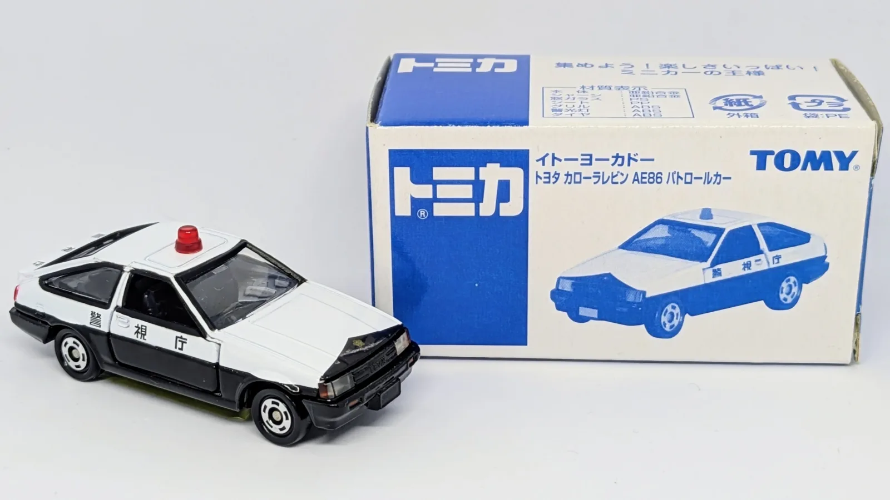

イトーヨーカドー特注 / パトカー第3弾 80'sトミカ名車パトカーシリーズ
トヨタ カローラレビン AE86 パトロールカー
- 発売年月
- 2005/04
- メーカー
- トヨタ
- 製造国
- 中国
- スケール
- 1/61
- モデル車名
- トヨタ カローラレビン AE86
- 車体区分
- ハッチバック
- ギミック
- サスペンション / 左右ドア開閉
- ホイール規格
- 10D
個人所有のトミカをデータベース化中です

イトーヨーカドー特注 / パトカー第3弾 80'sトミカ名車パトカーシリーズ